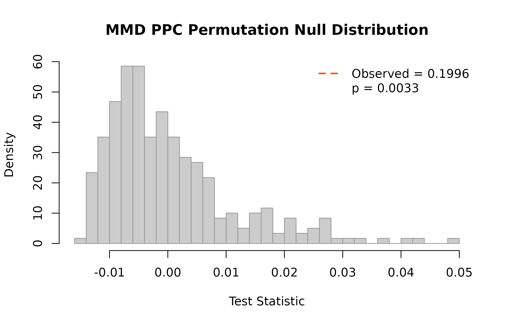
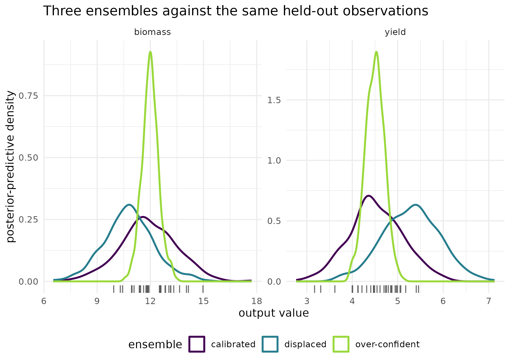

Is the calibrated model right about more than the mean?
Source:vignettes/kernR-ppc.Rmd
kernR-ppc.RmdWhy
A modeller has just finished a calibration and wants to know whether to believe it. The ensemble smoother converged, the posterior-predictive mean sits within a few per cent of the held-out season, and the root mean squared error is the best I have had. But the decision I am supporting is about the bad years, so what I need to know is whether the predictive distribution is right, not whether its centre is. Is the held-out year a plausible draw from what the calibrated model predicts? This vignette answers that on three synthetic ensembles: one calibrated correctly, one over-confident, and one displaced.
What
mmd_ppc() is a posterior-predictive check built on a
two-sample kernel test. It compares the posterior-predictive draws
against a held-out sample with the Maximum Mean Discrepancy and scores
the observed discrepancy against a permutation null, so a difference in
spread, shape, modality or tail weight counts exactly as a difference in
location does. That is the whole point: the standard check in an
ensemble-smoother workflow is the root mean squared error of the
posterior-predictive mean, and a distribution can match in mean while
failing badly everywhere else.
Alongside the p-value it reports surprise_bits, the
Shannon information of the permutation p-value: 0 bits at a p-value of
1, and capped at the base-two logarithm of one more than the permutation
count. It is an intuitive scalar summary of the same verdict, not a
posterior probability and not the Bayesian-surprise divergence.
pesto_ensemble() is the lightweight constructor:
posterior draws, observations, and optional metadata.
mmd_ppc() also consumes a
PESTO::pesto_ensemble_manifest(), the C2 manifest contract
PESTO’s own emitter produces, through a dedicated method, and
outputs restricts the check to named observation columns on
that path.
Do
A held-out sample
Thirty synthetic observations of a bivariate outcome, standing in for a year or a paddock kept out of the calibration.
A calibrated ensemble
n_draws <- 300L
post_good <- cbind(
yield = rnorm(n_draws, truth_mean[["yield"]], truth_sd[["yield"]]),
biomass = rnorm(n_draws, truth_mean[["biomass"]],
truth_sd[["biomass"]])
)
ens_good <- pesto_ensemble(
posterior = post_good, observed = observed,
metadata = list(holdout_year = 2018L, ies_iters = 6L)
)
ens_good
#>
#> PESTO ensemble manifest
#>
#> Posterior: 300 draws x 2 dims
#> Observed: 30 obs x 2 dims
#> Metadata: holdout_year, ies_iters
fit_good <- mmd_ppc(ens_good, n_permutations = 299L, seed = 1L)
fit_good
#>
#> MMD PPC Test
#>
#> Statistic: 0.00661733
#> P-value: 0.1900
#> N: 330
#> Perms: 299
#> Kernel X: rbf (bw = 1.736)
#>
#> PPC verdict
#> Posterior: 300 draws
#> Observed: 30 obs
#> Surprise: 2.396 bits
#> Verdict: consistent with observations
#> Metadata: holdout_year, ies_itersAn over-confident ensemble
The most common ensemble-smoother pathology: posterior draws clustered too tightly around the posterior mean. Here the spread is a third of what it should be, and the centre is exactly right.
post_narrow <- cbind(
yield = rnorm(n_draws, truth_mean[["yield"]],
truth_sd[["yield"]] / 3),
biomass = rnorm(n_draws, truth_mean[["biomass"]],
truth_sd[["biomass"]] / 3)
)
ens_narrow <- pesto_ensemble(post_narrow, observed,
metadata = list(scenario = "narrow"))
fit_narrow <- mmd_ppc(ens_narrow, n_permutations = 299L, seed = 1L)
fit_narrow
#>
#> MMD PPC Test
#>
#> Statistic: 0.199572
#> P-value: 0.0033
#> N: 330
#> Perms: 299
#> Kernel X: rbf (bw = 0.6027)
#>
#> PPC verdict
#> Posterior: 300 draws
#> Observed: 30 obs
#> Surprise: 8.229 bits
#> Verdict: REJECT (posterior inconsistent with observations)
#> Metadata: scenarioA displaced ensemble
post_shifted <- cbind(
yield = rnorm(n_draws, truth_mean[["yield"]] + 0.8,
truth_sd[["yield"]]),
biomass = rnorm(n_draws, truth_mean[["biomass"]] - 1.2,
truth_sd[["biomass"]])
)
ens_shifted <- pesto_ensemble(post_shifted, observed)
fit_shifted <- mmd_ppc(ens_shifted, n_permutations = 299L, seed = 1L)
fit_shifted
#>
#> MMD PPC Test
#>
#> Statistic: 0.245265
#> P-value: 0.0033
#> N: 330
#> Perms: 299
#> Kernel X: rbf (bw = 1.692)
#>
#> PPC verdict
#> Posterior: 300 draws
#> Observed: 30 obs
#> Surprise: 8.229 bits
#> Verdict: REJECT (posterior inconsistent with observations)| Ensemble | RMSE of the mean | MMD statistic | p-value | Surprise (bits) | Reject at 0.05 |
|---|---|---|---|---|---|
| calibrated | 0.213 | 0.0066 | 0.1900 | 2.40 | FALSE |
| over-confident | 0.146 | 0.1996 | 0.0033 | 8.23 | TRUE |
| displaced | 1.121 | 0.2453 | 0.0033 | 8.23 | TRUE |
The package’s own diagnostic
plot(fit_narrow)
Permutation null distribution of the MMD statistic for the over-confident ensemble, with the observed statistic marked against the held-out sample.
The figure: what each ensemble got wrong
pred_df <- do.call(rbind, lapply(
list(calibrated = post_good, `over-confident` = post_narrow,
displaced = post_shifted),
function(p1) {
data.frame(
value = as.numeric(p1),
output = rep(colnames(p1), each = nrow(p1)),
stringsAsFactors = FALSE
)
}
))
pred_df$ensemble <- rep(
c("calibrated", "over-confident", "displaced"),
each = length(post_good)
)
obs_df <- data.frame(
value = as.numeric(observed),
output = rep(colnames(observed), each = nrow(observed)),
stringsAsFactors = FALSE
)
ggplot2::ggplot(pred_df, ggplot2::aes(x = value, colour = ensemble)) +
ggplot2::geom_density(linewidth = 0.9) +
ggplot2::geom_rug(
data = obs_df, ggplot2::aes(x = value), inherit.aes = FALSE,
colour = "grey30", alpha = 0.8
) +
ggplot2::facet_wrap(~output, scales = "free") +
ggplot2::scale_colour_viridis_d(name = "ensemble", end = 0.85) +
ggplot2::labs(
x = "output value", y = "posterior-predictive density",
title = "Three ensembles against the same held-out observations"
) +
ggplot2::theme_minimal() +
ggplot2::theme(legend.position = "bottom")
Posterior-predictive distributions of the three ensembles against the held-out observations, shown as tick marks along the axis, one panel per output. The calibrated curve covers the observations; the over-confident curve is centred correctly and far too narrow to have produced them; the displaced curve has the right width in the wrong place. The root mean squared error of the mean cannot separate the first two.
The same check on a PESTO manifest
PESTO’s own emitter produces a pesto_ensemble_manifest,
and mmd_ppc() consumes it through a dedicated method.
Held-out observations are supplied explicitly, because the manifest’s
obs_target slot is the single point the posterior was
fitted to and is not a valid two-sample comparator on its own.
n_manifest <- 80L
n_cols <- 3L
post_manifest <- matrix(rnorm(n_manifest * n_cols), n_manifest, n_cols)
colnames(post_manifest) <- paste0("o", seq_len(n_cols))
manifest <- PESTO::pesto_ensemble_manifest(
run_id = "vignette_demo",
params = data.frame(
real_name = paste0("r", seq_len(n_manifest)),
p1 = rnorm(n_manifest), p2 = rnorm(n_manifest),
check.names = FALSE
),
outputs = data.frame(
real_name = paste0("r", seq_len(n_manifest)), post_manifest,
check.names = FALSE
),
weights = setNames(rep(1, n_cols), colnames(post_manifest)),
obs_target = setNames(rnorm(n_cols), colnames(post_manifest)),
data_hash = "sha256:vignette_demo",
pesto_version = as.character(packageVersion("PESTO")),
timestamp = Sys.time(),
method = "ies_callback",
noptmax = 1L,
lambda_schedule = 1
)
held_out <- matrix(rnorm(20L * n_cols), 20L, n_cols)
colnames(held_out) <- colnames(post_manifest)
fit_manifest <- mmd_ppc(manifest, observed = held_out,
n_permutations = 199L, seed = 1L)
fit_manifest$p_value
#> [1] 0.725Read
The calibrated ensemble is not falsified. Its MMD statistic is 0.00662 with a p-value of 0.19 and 2.4 bits of surprise, well below the 4.32 bits that correspond to a p-value of 0.05: the held-out observations are an unremarkable draw from what the model predicts.
The over-confident ensemble is where the check earns its place. Its
posterior mean is correct – the root mean squared error of the mean is
0.146 against 0.213 for the calibrated ensemble, so the standard
diagnostic ranks the two as nearly equivalent – and
mmd_ppc() returns a statistic of 0.2 with a p-value of
0.0033 and 8.23 bits of surprise, which is a rejection. The figure shows
why: the narrow curve is a spike where the observations are a
spread.
The displaced ensemble is rejected too, statistic 0.245, p-value 0.0033, 8.23 bits, and this one the root mean squared error of the mean would also have caught, at 1.121. The value of the distributional check is not that it finds displacement; it is that it finds the over-confidence that displacement-based diagnostics cannot.
The manifest path reaches the same machinery from PESTO’s own object. On the synthetic manifest above, where the posterior draws and the held-out sample are both standard normal and no failure was built in, the check returns a p-value of 0.725.
Limits
All three ensembles are synthetic, and the failures were built in so that the verdicts could be read against a known answer. Distributional power is set by both the ensemble size and the held-out sample size; with 30 held-out observations, only a fairly gross miscalibration is detectable, and a check that fails to reject is not evidence of calibration. The surprise measure is a monotone transformation of the p-value and carries no information the p-value does not: it inherits the permutation cap of 8.23 bits at 299 permutations, so it saturates instead of growing once the p-value hits its floor. This is a check against held-out data; run against the data the model was calibrated on, it tests goodness of fit rather than predictive adequacy and will be optimistic. Finally the check is silent about why an ensemble fails: it reports that the predictive distribution and the observations differ, and the figure, not the statistic, is what says whether the failure is in location, spread or shape.
Notes on practice
Ensemble and sample size. An ensemble in the low hundreds is usually enough at agricultural scale; twenty held-out observations is a practical floor below which the test has little to work with.
Permutations. At 299 permutations the smallest p-value is 0.00333 and the largest surprise is 8.23 bits. Raise the budget when working near the floor.
Multi-dimensional outputs. mmd_ppc()
handles more than one output natively through the kernel; the default
RBF bandwidth is set by the median heuristic over the pooled posterior
and observed sample, so the output columns should be on comparable
scales or standardised first.
What to read next
Are these draws calibrated, and do the engines agree? asks the one-sample version of the same question, comparing draws against a target density rather than against held-out data, and adds the concordance test across several sources. Did the management change shift the simulated distribution? compares two calibrated ensembles against each other instead of against observations. Getting started with kernR introduces the MMD two-sample test this check is built on.
References
- Gelman, A., Meng, X.-L., & Stern, H. (1996). Posterior predictive assessment of model fitness via realized discrepancies. Statistica Sinica, 6(4), 733-760.
- Gretton, A., Borgwardt, K. M., Rasch, M. J., Scholkopf, B., & Smola, A. (2012). A kernel two-sample test. Journal of Machine Learning Research, 13, 723-773.
Reproduce
Seed 1 for the held-out sample and all three ensembles;
seed = 1L passed to every check so the permutation draws
are fixed. Package versions follow.
sessionInfo()
#> R version 4.6.1 (2026-06-24)
#> Platform: x86_64-pc-linux-gnu
#> Running under: Ubuntu 24.04.5 LTS
#>
#> Matrix products: default
#> BLAS: /usr/lib/x86_64-linux-gnu/openblas-pthread/libblas.so.3
#> LAPACK: /usr/lib/x86_64-linux-gnu/openblas-pthread/libopenblasp-r0.3.26.so; LAPACK version 3.12.0
#>
#> locale:
#> [1] LC_CTYPE=C.UTF-8 LC_NUMERIC=C LC_TIME=C.UTF-8
#> [4] LC_COLLATE=C.UTF-8 LC_MONETARY=C.UTF-8 LC_MESSAGES=C.UTF-8
#> [7] LC_PAPER=C.UTF-8 LC_NAME=C LC_ADDRESS=C
#> [10] LC_TELEPHONE=C LC_MEASUREMENT=C.UTF-8 LC_IDENTIFICATION=C
#>
#> time zone: UTC
#> tzcode source: system (glibc)
#>
#> attached base packages:
#> [1] stats graphics grDevices utils datasets methods base
#>
#> other attached packages:
#> [1] kernR_0.8.2
#>
#> loaded via a namespace (and not attached):
#> [1] vctrs_0.7.3 cli_3.6.6 knitr_1.52
#> [4] rlang_1.3.0 xfun_0.61 otel_0.2.0
#> [7] generics_0.1.4 S7_0.2.2 textshaping_1.0.5
#> [10] data.table_1.18.6.1 jsonlite_2.0.0 labeling_0.4.3
#> [13] glue_1.8.1 htmltools_0.5.9 PESTO_0.10.1
#> [16] ragg_1.5.2 sass_0.4.10 scales_1.4.0
#> [19] rmarkdown_2.32 grid_4.6.1 evaluate_1.0.5
#> [22] jquerylib_0.1.4 fastmap_1.2.0 yaml_2.3.12
#> [25] lifecycle_1.0.5 compiler_4.6.1 RColorBrewer_1.1-3
#> [28] fs_2.1.0 Rcpp_1.1.2 farver_2.1.2
#> [31] systemfonts_1.3.2 digest_0.6.39 viridisLite_0.4.3
#> [34] R6_2.6.1 bslib_0.12.0 withr_3.0.3
#> [37] tools_4.6.1 gtable_0.3.6 pkgdown_2.2.1
#> [40] ggplot2_4.0.3 cachem_1.1.0 desc_1.4.3